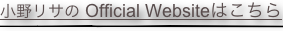
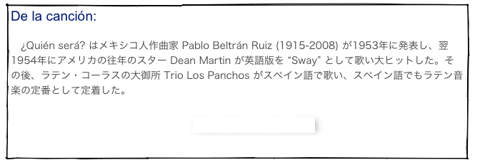

Canción de diciembre
“¿Quién será?”
小野リサ
Canción de diciembre
“¿Quién será?”
小野リサ



¿Quién será la que me quiera a mí?
¿Quién será?, ¿quién será?
¿Quién será la que me dé su amor?
¿Quién será?, ¿quién será?
Yo no sé si la podré encontrar
Yo no sé, yo no sé
Yo no sé si volveré a querer
Yo no sé, yo no sé
He querido volver a vivir
La pasión y el calor de otro amor
De otro amor que me hiciera sentir
Que me hiciera feliz como ayer lo fui
¿Quién será la que me quiera a mí?
¿Quién será?, ¿quién será?
¿Quién será la que me dé su amor?
¿Quién será?, ¿quién será?
Gramática: tiempo futuro (未来時制)
スペイン語には英語と違って、動詞の語形変化を制御する時制として未来時制があります。英語では、未来は動詞の語形変化ではなく助動詞 will で表現されます。ちなみに日本語では、現在も未来も同じ時制（未完了）として表現されます。
¿Quién será? Who will be?
la podré encontrar I will be able to find her
volveré a querer I will love somebody again.
未来時制の語尾変化
ser: seré serás será seremos seréis, serán
poder: podré, podrás, podrá, podremos, podréis, podrán
volver: volveré, volverá, volveremos, volveréis, volverán
Gramática: el / la / los / las que (the one(s) + 関係代名詞 that)
スペイン語の関係代名詞の前に冠詞を付けると、「〜であるところの誰それ」という意味になります。冠詞の性と数に応じて意味が変わります。
¿Quién será la que me quiera a mí? Who will be the woman who will love me?
El que ríe vive mejor. The one who laughs live better.
Gramática: subjuntivo (接続法というよりむしろ従属法)
英語にも接続法の名残が見られますが、スペイン語では接続法はしっかりと文法構造の中に存在しています。
英語で、「もし僕が君（の立場）だったら」という時、”If I were you, ...” の “were” は過去時制ではなく「接続法」なわけです。しかし、英語での接続法の使用は限られています。
スペイン語では、未来のことで未確定のこと、「〜だったらいいなぁ」「〜でありますように」といった願望文の内容、仮定の話の内容など、確定的でない内容は接続法を用いて表します。
ちなみに「接続法」という用語は、 subjunctivo (英語で subjunctive) の訳語ですが、このままでは意味不明です。むしろ「従属法」と言ったほうが分かりやすい。なぜかというと、上に述べたように主節で使われることはなく、願望や仮定といった内容の従属節や関係節の中で使われるからです。
¿Quién será la que me dé su amor? Who will be the woman who will give her love?
この場合、英語では接続法は使われないのが普通ですが、スペイン語では「私にその愛を与えてくれる」という部分の動詞が普通の “da” ではなく、従属法の “dé” で表現されています。スペイン語では、誰だろうという位だから、現実の話ではないので、普通の言い方（直説法と言います）では言えないと考えるわけです。
この直接法と従属法の違いを、東北大学でスペイン語を担当する吉田先生は、「実数」と「虚数」の違いだと表現されていますが、まさにそのとおりです。
Who will be the woman who will love me?
Who will be?. who will be?
Who will be the woman who will give her love?
Who will be?, who will be?
I don't know if I will be able to find her
I don't know, I don't know
I don't know if I will love somebody again
I don't know, I don't know
I have wanted to live again
The passion and the heat of other love
Of other love that would make me feel
that would make me happy like yesterday I was
Who will be the woman who will love me?
Who will be?, who will be?
Who will be the woman who will give her love
Who will be?. who will be?
Letra de la canción:

